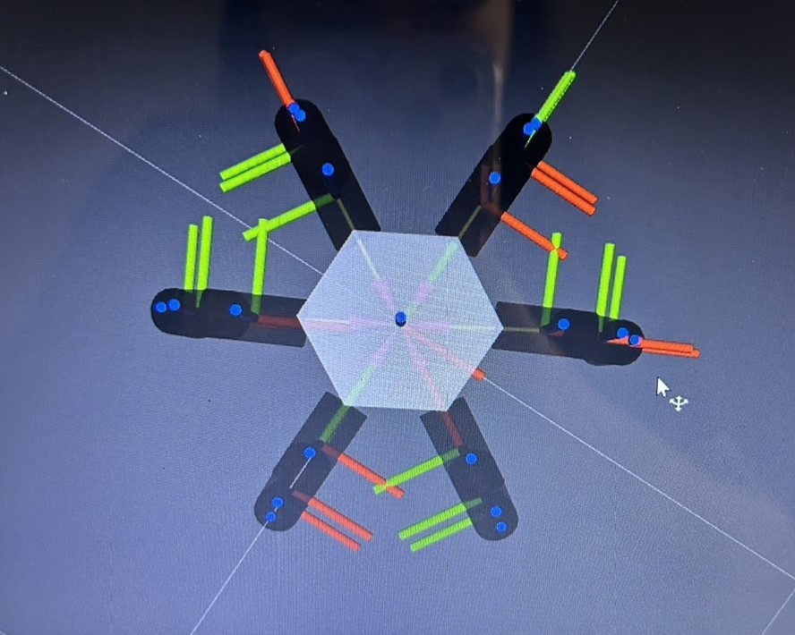
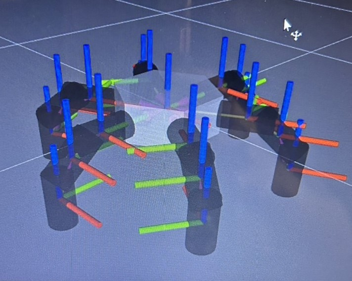

Project
"Hexapod spider robot"
ในคลิปข้างต้นเป็นตัวอย่างโปรเจค Hexapod spider robot โดยรูปแบบของตัวหุ่นยนต์เราจะอ้างอิงแบบในคลิป
แต่ code และเป้าหมายที่ต้องการทำคือการจำลองท่าทางการเดินของหุ่นยนต์แมงมุม 6 ขา
ในสถานการณ์ต่างๆ เช่นการเดินในพื้นที่ขรุขระ หรือการเดินในพื้นที่ๆมีระดับไม่เท่ากัน เป็นต้นค่ะ
โปรแกรมที่ใช้งานในการสร้างหุ่นยนต์
และจำลองการเคลื่อนไหว
Blender : ใช้สำหรับการสร้างและแก้ไขโมเดล 3D
Rviz2 : เครื่องมือแสดงผลแบบ 3 มิติสำหรับ ROS 2
ROS2-Humble : เป็นแพลตฟอร์มที่ใช้สำหรับการพัฒนาหุ่นยนต์และระบบอัตโนมัติ
Pybullet : ไลบรารีที่ใช้สำหรับการจำลองฟิสิกส์แบบเรียลไทม์และการควบคุมหุ่นยนต์ในสภาพแวดล้อมเสมือน
ตัวอย่างฐานหุ่นยนต์ที่สร้างใน Blender
ตัวอย่างขาหุ่นยนต์ที่สร้างใน Ros2,Rviz2


โดยในรูปจะมีขาทั้งหมด 6 ขา ใน 1 ขาจะมีทั้งหมด 3 ท่อนที่ใช้ในการเคลื่อนที่
โดยขาส่วนที่ติดกับฐานของหุ่นยนต์จะมีเป็นขาท่อนที่ขยับในแนวแกน Z
และขาสองท่อนถัดมาจะเป็นขนที่ขยับในแนวแกน X ซึ่งเราจะต้องกำหนดองศาในการขยับให้พอดีกับการเดินรวมกันทั้ง 6 ขาค่ะ
และในปัจุบันเรากำลังพัฒนาในส่วนของการเขียนโปรแกรมควบคุมการเดินของหุ่นยนต์ต่อไปค่ะ
โดยเป้าหมายหลักจะเป็นการควบคุมขาหุ่นยนต์ในสามารถเดินในพื้นที่ราบได้อย่างมั่นคงก่อน
และจะพัฒนาต่อไปในพื้นที่ๆแตกต่างกันออกไป